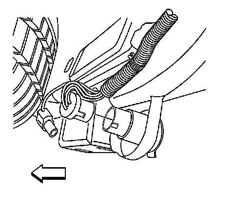
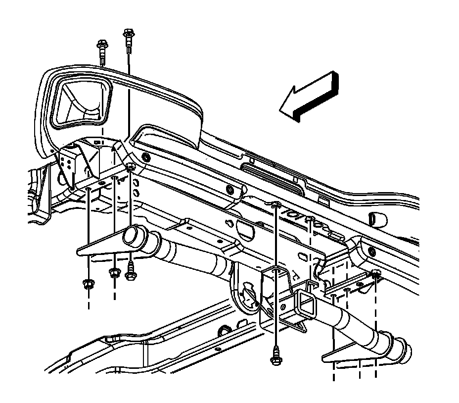

Trailer Hitch: Service and Repair
Trailer Hitch Replacement
Removal Procedure

1.Disconnect the trailer wiring harness.

1.Remove the hitch platform bolts from the frame rails and the rear bumper.
2.Remove the hitch platform from the vehicle.
Installation Procedure
1.Position the hitch platform to the vehicle.
Notice:Refer to Fastener Notice .
1.Install the platform hitch bolts to the frame rails and the rear bumper.
Tighten
-Tighten the trailer hitch-to-frame bolts to 113 N �m (83 lb ft).
-Tighten the trailer hitch-to-bumper bolts to 95 N �m (70 lb ft).
1.Connect the trailer wiring harness.